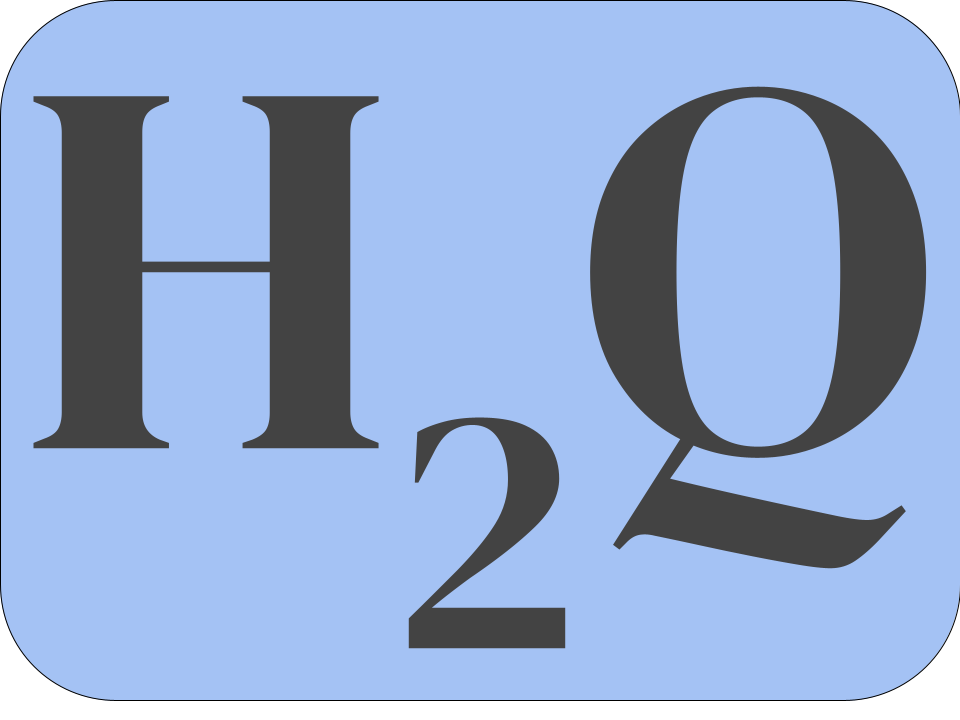

How To Quantitative |
 |
|---|
How To Quantitative is aimed to assist college students who are struggling with their quantitative courses.
James Zuckerman is a Vassar Student majoring in Physics and Computer Science. With his experience in Vassar College's Q-Center, he aims to provide